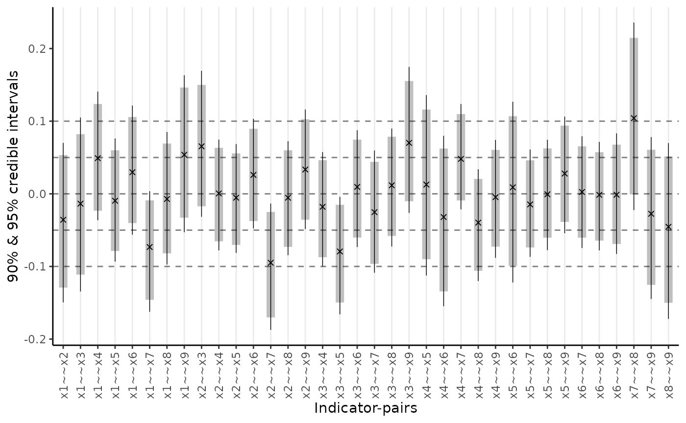
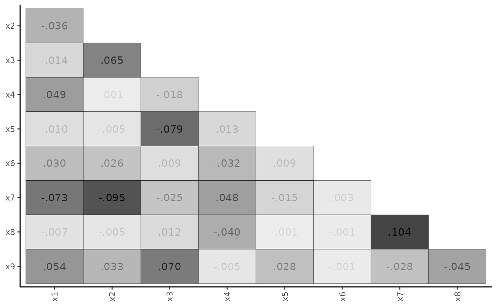

Confirmatory Factor Analysis
Xiaolu Fan, James Uanhoro
cfa.RmdBasic CFA Model
We begin with a simple example of confirmatory factor analysis (CFA),
using theminorbsem() function to fit the model. The
minorbsem package contains a built-in dataset called
HS, which is a part of classic Holzinger-Swineford dataset.
This dataset is used in many papers and books on CFA. The dataset
consists of mental ability test scores of seventh and eighth grade
children from two different schools (Pasteur and Grant-White). In our
version of the dataset (obtained from lavaan, Rosseel (2012)), only 9 out of the original 26
tests are included.
We begin by loading the package:
## ## ################################################################################# This is minorbsem 0.2.16.9000##
## All users of R (or SEM) are invited to report bugs, submit functions or ideas
## for functions. An efficient way to do this is to open an issue on GitHub
## https://github.com/jamesuanhoro/minorbsem/issues/.## ###############################################################################The first six lines of the dataset:
head(HS)## id sex ageyr agemo school grade x1 x2 x3 x4 x5 x6 x7 x8
## 1 1 1 13 1 Pasteur 7 3.333333 7.75 0.375 2.333333 5.75 1.2857143 3.391304 5.75
## 2 2 2 13 7 Pasteur 7 5.333333 5.25 2.125 1.666667 3.00 1.2857143 3.782609 6.25
## 3 3 2 13 1 Pasteur 7 4.500000 5.25 1.875 1.000000 1.75 0.4285714 3.260870 3.90
## 4 4 1 13 2 Pasteur 7 5.333333 7.75 3.000 2.666667 4.50 2.4285714 3.000000 5.30
## 5 5 2 12 2 Pasteur 7 4.833333 4.75 0.875 2.666667 4.00 2.5714286 3.695652 6.30
## 6 6 2 14 1 Pasteur 7 5.333333 5.00 2.250 1.000000 3.00 0.8571429 4.347826 6.65
## x9
## 1 6.361111
## 2 7.916667
## 3 4.416667
## 4 4.861111
## 5 5.916667
## 6 7.500000Data preparation
The scale of data is important for setting priors on model
parameters. The default priors for models fit with
minorbsem are reasonable when variables have standard
deviations close to 1. For this reason, we first check the standard
deviations of the relevant variables for this analysis:
## x1 x2 x3 x4 x5 x6 x7 x8 x9
## 1 3.333333 7.75 0.375 2.333333 5.75 1.2857143 3.391304 5.75 6.361111
## 2 5.333333 5.25 2.125 1.666667 3.00 1.2857143 3.782609 6.25 7.916667
## 3 4.500000 5.25 1.875 1.000000 1.75 0.4285714 3.260870 3.90 4.416667
## 4 5.333333 7.75 3.000 2.666667 4.50 2.4285714 3.000000 5.30 4.861111
## 5 4.833333 4.75 0.875 2.666667 4.00 2.5714286 3.695652 6.30 5.916667
## 6 5.333333 5.00 2.250 1.000000 3.00 0.8571429 4.347826 6.65 7.500000
apply(item_data, 2, sd) # compute SD of each variable## x1 x2 x3 x4 x5 x6 x7 x8 x9
## 1.167432 1.177451 1.130979 1.164116 1.290472 1.095603 1.089534 1.012615 1.009152All variables have standard deviations close to 1, so we can move forward with the data as they are. Otherwise, we would recommend re-scaling the variables.1
Model syntax
The model syntax is lavaan-style:
syntax_basic <- "
Visual =~ x1 + x2 + x3
Verbal =~ x4 + x5 + x6
Speed =~ x7 + x8 + x9"This model assumes three latent variables (or factors): visual, verbal, and speed. The visual factor has the indicators: x1, x2, and x3; the verbal factor has indicators: x4, x5, and x6; the speed factor has indicators: x7, x8, and x9.
Fit the model
We run the analysis using the minorbsem() function. By
default, the function assumes that minor factors influence the
covariance between the variables. minorbsem then prints out
the iterations from Stan – we show these iterations once so the reader
knows what to expect.
fit_cfa <- minorbsem(model = syntax_basic, data = HS)## Processing user input ...## User input fully processed :)
## Now to modeling.## Fitting Stan model ...## Init values were only set for a subset of parameters.
## Missing init values for the following parameters:
## - chain 1: gdp_alpha, loadings, res_sds_u, phi_mat_chol, res_cor_01, coefs, sigma_loadings_complex, gdp_loadings_complex, Sigma
## - chain 2: gdp_alpha, loadings, res_sds_u, phi_mat_chol, res_cor_01, coefs, sigma_loadings_complex, gdp_loadings_complex, Sigma
## - chain 3: gdp_alpha, loadings, res_sds_u, phi_mat_chol, res_cor_01, coefs, sigma_loadings_complex, gdp_loadings_complex, Sigma
##
## To disable this message use options(cmdstanr_warn_inits = FALSE).## Running MCMC with 3 chains, at most 2 in parallel...
##
## Chain 1 Iteration: 1 / 2000 [ 0%] (Warmup)## Chain 1 Informational Message: The current Metropolis proposal is about to be rejected because of the following issue:## Chain 1 Exception: lkj_corr_cholesky_lpdf: Random variable[2] is 0, but must be positive! (in '/tmp/RtmpfL4wEJ/model-248a5c6731c9.stan', line 324, column 2 to column 48)## Chain 1 If this warning occurs sporadically, such as for highly constrained variable types like covariance matrices, then the sampler is fine,## Chain 1 but if this warning occurs often then your model may be either severely ill-conditioned or misspecified.## Chain 1## Chain 1 Informational Message: The current Metropolis proposal is about to be rejected because of the following issue:## Chain 1 Exception: lkj_corr_cholesky_lpdf: Random variable[2] is 0, but must be positive! (in '/tmp/RtmpfL4wEJ/model-248a5c6731c9.stan', line 324, column 2 to column 48)## Chain 1 If this warning occurs sporadically, such as for highly constrained variable types like covariance matrices, then the sampler is fine,## Chain 1 but if this warning occurs often then your model may be either severely ill-conditioned or misspecified.## Chain 1## Chain 1 Informational Message: The current Metropolis proposal is about to be rejected because of the following issue:## Chain 1 Exception: cholesky_decompose: A is not symmetric. A[1,4] = inf, but A[4,1] = inf (in '/tmp/RtmpfL4wEJ/model-248a5c6731c9.stan', line 432, column 6 to column 81)## Chain 1 If this warning occurs sporadically, such as for highly constrained variable types like covariance matrices, then the sampler is fine,## Chain 1 but if this warning occurs often then your model may be either severely ill-conditioned or misspecified.## Chain 1## Chain 1 Informational Message: The current Metropolis proposal is about to be rejected because of the following issue:## Chain 1 Exception: cholesky_decompose: Matrix m is not positive definite (in '/tmp/RtmpfL4wEJ/model-248a5c6731c9.stan', line 432, column 6 to column 81)## Chain 1 If this warning occurs sporadically, such as for highly constrained variable types like covariance matrices, then the sampler is fine,## Chain 1 but if this warning occurs often then your model may be either severely ill-conditioned or misspecified.## Chain 1## Chain 1 Informational Message: The current Metropolis proposal is about to be rejected because of the following issue:## Chain 1 Exception: lkj_corr_cholesky_lpdf: Random variable[2] is 0, but must be positive! (in '/tmp/RtmpfL4wEJ/model-248a5c6731c9.stan', line 324, column 2 to column 48)## Chain 1 If this warning occurs sporadically, such as for highly constrained variable types like covariance matrices, then the sampler is fine,## Chain 1 but if this warning occurs often then your model may be either severely ill-conditioned or misspecified.## Chain 1## Chain 1 Informational Message: The current Metropolis proposal is about to be rejected because of the following issue:## Chain 1 Exception: lkj_corr_cholesky_lpdf: Random variable[2] is 0, but must be positive! (in '/tmp/RtmpfL4wEJ/model-248a5c6731c9.stan', line 324, column 2 to column 48)## Chain 1 If this warning occurs sporadically, such as for highly constrained variable types like covariance matrices, then the sampler is fine,## Chain 1 but if this warning occurs often then your model may be either severely ill-conditioned or misspecified.## Chain 1## Chain 2 Iteration: 1 / 2000 [ 0%] (Warmup)## Chain 2 Informational Message: The current Metropolis proposal is about to be rejected because of the following issue:## Chain 2 Exception: cholesky_decompose: A is not symmetric. A[1,2] = inf, but A[2,1] = inf (in '/tmp/RtmpfL4wEJ/model-248a5c6731c9.stan', line 432, column 6 to column 81)## Chain 2 If this warning occurs sporadically, such as for highly constrained variable types like covariance matrices, then the sampler is fine,## Chain 2 but if this warning occurs often then your model may be either severely ill-conditioned or misspecified.## Chain 2## Chain 2 Informational Message: The current Metropolis proposal is about to be rejected because of the following issue:## Chain 2 Exception: cholesky_decompose: A is not symmetric. A[1,2] = inf, but A[2,1] = inf (in '/tmp/RtmpfL4wEJ/model-248a5c6731c9.stan', line 432, column 6 to column 81)## Chain 2 If this warning occurs sporadically, such as for highly constrained variable types like covariance matrices, then the sampler is fine,## Chain 2 but if this warning occurs often then your model may be either severely ill-conditioned or misspecified.## Chain 2## Chain 2 Informational Message: The current Metropolis proposal is about to be rejected because of the following issue:## Chain 2 Exception: cholesky_decompose: Matrix m is not positive definite (in '/tmp/RtmpfL4wEJ/model-248a5c6731c9.stan', line 432, column 6 to column 81)## Chain 2 If this warning occurs sporadically, such as for highly constrained variable types like covariance matrices, then the sampler is fine,## Chain 2 but if this warning occurs often then your model may be either severely ill-conditioned or misspecified.## Chain 2## Chain 2 Informational Message: The current Metropolis proposal is about to be rejected because of the following issue:## Chain 2 Exception: cholesky_decompose: Matrix m is not positive definite (in '/tmp/RtmpfL4wEJ/model-248a5c6731c9.stan', line 432, column 6 to column 81)## Chain 2 If this warning occurs sporadically, such as for highly constrained variable types like covariance matrices, then the sampler is fine,## Chain 2 but if this warning occurs often then your model may be either severely ill-conditioned or misspecified.## Chain 2## Chain 2 Informational Message: The current Metropolis proposal is about to be rejected because of the following issue:## Chain 2 Exception: lkj_corr_cholesky_lpdf: Random variable[2] is 0, but must be positive! (in '/tmp/RtmpfL4wEJ/model-248a5c6731c9.stan', line 324, column 2 to column 48)## Chain 2 If this warning occurs sporadically, such as for highly constrained variable types like covariance matrices, then the sampler is fine,## Chain 2 but if this warning occurs often then your model may be either severely ill-conditioned or misspecified.## Chain 2## Chain 2 Informational Message: The current Metropolis proposal is about to be rejected because of the following issue:## Chain 2 Exception: cholesky_decompose: A is not symmetric. A[7,8] = inf, but A[8,7] = inf (in '/tmp/RtmpfL4wEJ/model-248a5c6731c9.stan', line 432, column 6 to column 81)## Chain 2 If this warning occurs sporadically, such as for highly constrained variable types like covariance matrices, then the sampler is fine,## Chain 2 but if this warning occurs often then your model may be either severely ill-conditioned or misspecified.## Chain 2## Chain 1 Iteration: 200 / 2000 [ 10%] (Warmup)## Chain 1 Informational Message: The current Metropolis proposal is about to be rejected because of the following issue:## Chain 1 Exception: cholesky_decompose: Matrix m is not positive definite (in '/tmp/RtmpfL4wEJ/model-248a5c6731c9.stan', line 432, column 6 to column 81)## Chain 1 If this warning occurs sporadically, such as for highly constrained variable types like covariance matrices, then the sampler is fine,## Chain 1 but if this warning occurs often then your model may be either severely ill-conditioned or misspecified.## Chain 1## Chain 2 Iteration: 200 / 2000 [ 10%] (Warmup)
## Chain 1 Iteration: 400 / 2000 [ 20%] (Warmup)
## Chain 2 Iteration: 400 / 2000 [ 20%] (Warmup)
## Chain 1 Iteration: 600 / 2000 [ 30%] (Warmup)
## Chain 2 Iteration: 600 / 2000 [ 30%] (Warmup)
## Chain 1 Iteration: 800 / 2000 [ 40%] (Warmup)
## Chain 2 Iteration: 800 / 2000 [ 40%] (Warmup)## Chain 1 Informational Message: The current Metropolis proposal is about to be rejected because of the following issue:## Chain 1 Exception: cholesky_decompose: Matrix m is not positive definite (in '/tmp/RtmpfL4wEJ/model-248a5c6731c9.stan', line 432, column 6 to column 81)## Chain 1 If this warning occurs sporadically, such as for highly constrained variable types like covariance matrices, then the sampler is fine,## Chain 1 but if this warning occurs often then your model may be either severely ill-conditioned or misspecified.## Chain 1## Chain 2 Iteration: 1000 / 2000 [ 50%] (Warmup)
## Chain 2 Iteration: 1001 / 2000 [ 50%] (Sampling)
## Chain 1 Iteration: 1000 / 2000 [ 50%] (Warmup)
## Chain 1 Iteration: 1001 / 2000 [ 50%] (Sampling)
## Chain 2 Iteration: 1200 / 2000 [ 60%] (Sampling)
## Chain 1 Iteration: 1200 / 2000 [ 60%] (Sampling)
## Chain 2 Iteration: 1400 / 2000 [ 70%] (Sampling)
## Chain 1 Iteration: 1400 / 2000 [ 70%] (Sampling)
## Chain 1 Iteration: 1600 / 2000 [ 80%] (Sampling)
## Chain 2 Iteration: 1600 / 2000 [ 80%] (Sampling)
## Chain 2 Iteration: 1800 / 2000 [ 90%] (Sampling)
## Chain 1 Iteration: 1800 / 2000 [ 90%] (Sampling)
## Chain 1 Iteration: 2000 / 2000 [100%] (Sampling)
## Chain 2 Iteration: 2000 / 2000 [100%] (Sampling)
## Chain 1 finished in 3.8 seconds.
## Chain 2 finished in 3.8 seconds.
## Chain 3 Iteration: 1 / 2000 [ 0%] (Warmup)## Chain 3 Informational Message: The current Metropolis proposal is about to be rejected because of the following issue:## Chain 3 Exception: lkj_corr_cholesky_lpdf: Random variable[2] is 0, but must be positive! (in '/tmp/RtmpfL4wEJ/model-248a5c6731c9.stan', line 324, column 2 to column 48)## Chain 3 If this warning occurs sporadically, such as for highly constrained variable types like covariance matrices, then the sampler is fine,## Chain 3 but if this warning occurs often then your model may be either severely ill-conditioned or misspecified.## Chain 3## Chain 3 Informational Message: The current Metropolis proposal is about to be rejected because of the following issue:## Chain 3 Exception: lkj_corr_cholesky_lpdf: Random variable[2] is 0, but must be positive! (in '/tmp/RtmpfL4wEJ/model-248a5c6731c9.stan', line 324, column 2 to column 48)## Chain 3 If this warning occurs sporadically, such as for highly constrained variable types like covariance matrices, then the sampler is fine,## Chain 3 but if this warning occurs often then your model may be either severely ill-conditioned or misspecified.## Chain 3## Chain 3 Informational Message: The current Metropolis proposal is about to be rejected because of the following issue:## Chain 3 Exception: cholesky_decompose: Matrix m is not positive definite (in '/tmp/RtmpfL4wEJ/model-248a5c6731c9.stan', line 432, column 6 to column 81)## Chain 3 If this warning occurs sporadically, such as for highly constrained variable types like covariance matrices, then the sampler is fine,## Chain 3 but if this warning occurs often then your model may be either severely ill-conditioned or misspecified.## Chain 3## Chain 3 Informational Message: The current Metropolis proposal is about to be rejected because of the following issue:## Chain 3 Exception: cholesky_decompose: Matrix m is not positive definite (in '/tmp/RtmpfL4wEJ/model-248a5c6731c9.stan', line 432, column 6 to column 81)## Chain 3 If this warning occurs sporadically, such as for highly constrained variable types like covariance matrices, then the sampler is fine,## Chain 3 but if this warning occurs often then your model may be either severely ill-conditioned or misspecified.## Chain 3## Chain 3 Informational Message: The current Metropolis proposal is about to be rejected because of the following issue:## Chain 3 Exception: lkj_corr_cholesky_lpdf: Random variable[2] is 0, but must be positive! (in '/tmp/RtmpfL4wEJ/model-248a5c6731c9.stan', line 324, column 2 to column 48)## Chain 3 If this warning occurs sporadically, such as for highly constrained variable types like covariance matrices, then the sampler is fine,## Chain 3 but if this warning occurs often then your model may be either severely ill-conditioned or misspecified.## Chain 3## Chain 3 Informational Message: The current Metropolis proposal is about to be rejected because of the following issue:## Chain 3 Exception: cholesky_decompose: Matrix m is not positive definite (in '/tmp/RtmpfL4wEJ/model-248a5c6731c9.stan', line 432, column 6 to column 81)## Chain 3 If this warning occurs sporadically, such as for highly constrained variable types like covariance matrices, then the sampler is fine,## Chain 3 but if this warning occurs often then your model may be either severely ill-conditioned or misspecified.## Chain 3## Chain 3 Informational Message: The current Metropolis proposal is about to be rejected because of the following issue:## Chain 3 Exception: cholesky_decompose: Matrix m is not positive definite (in '/tmp/RtmpfL4wEJ/model-248a5c6731c9.stan', line 432, column 6 to column 81)## Chain 3 If this warning occurs sporadically, such as for highly constrained variable types like covariance matrices, then the sampler is fine,## Chain 3 but if this warning occurs often then your model may be either severely ill-conditioned or misspecified.## Chain 3## Chain 3 Informational Message: The current Metropolis proposal is about to be rejected because of the following issue:## Chain 3 Exception: cholesky_decompose: Matrix m is not positive definite (in '/tmp/RtmpfL4wEJ/model-248a5c6731c9.stan', line 432, column 6 to column 81)## Chain 3 If this warning occurs sporadically, such as for highly constrained variable types like covariance matrices, then the sampler is fine,## Chain 3 but if this warning occurs often then your model may be either severely ill-conditioned or misspecified.## Chain 3## Chain 3 Iteration: 200 / 2000 [ 10%] (Warmup)## Chain 3 Informational Message: The current Metropolis proposal is about to be rejected because of the following issue:## Chain 3 Exception: cholesky_decompose: Matrix m is not positive definite (in '/tmp/RtmpfL4wEJ/model-248a5c6731c9.stan', line 432, column 6 to column 81)## Chain 3 If this warning occurs sporadically, such as for highly constrained variable types like covariance matrices, then the sampler is fine,## Chain 3 but if this warning occurs often then your model may be either severely ill-conditioned or misspecified.## Chain 3## Chain 3 Iteration: 400 / 2000 [ 20%] (Warmup)## Chain 3 Informational Message: The current Metropolis proposal is about to be rejected because of the following issue:## Chain 3 Exception: cholesky_decompose: Matrix m is not positive definite (in '/tmp/RtmpfL4wEJ/model-248a5c6731c9.stan', line 432, column 6 to column 81)## Chain 3 If this warning occurs sporadically, such as for highly constrained variable types like covariance matrices, then the sampler is fine,## Chain 3 but if this warning occurs often then your model may be either severely ill-conditioned or misspecified.## Chain 3## Chain 3 Iteration: 600 / 2000 [ 30%] (Warmup)
## Chain 3 Iteration: 800 / 2000 [ 40%] (Warmup)
## Chain 3 Iteration: 1000 / 2000 [ 50%] (Warmup)
## Chain 3 Iteration: 1001 / 2000 [ 50%] (Sampling)
## Chain 3 Iteration: 1200 / 2000 [ 60%] (Sampling)
## Chain 3 Iteration: 1400 / 2000 [ 70%] (Sampling)
## Chain 3 Iteration: 1600 / 2000 [ 80%] (Sampling)
## Chain 3 Iteration: 1800 / 2000 [ 90%] (Sampling)
## Chain 3 Iteration: 2000 / 2000 [100%] (Sampling)
## Chain 3 finished in 4.3 seconds.
##
## All 3 chains finished successfully.
## Mean chain execution time: 3.9 seconds.
## Total execution time: 8.2 seconds.## Warning: 1 of 3000 (0.0%) transitions ended with a divergence.
## See https://mc-stan.org/misc/warnings for details.## Parameter estimates (method = normal, sample size(s) = 301)
## from op to mean sd 5.000% 95.000% rhat ess_bulk
## ──────────────────────────────────────────────────────────────────────────────
## Goodness of fit
## ──────────────────────────────────────────────────────────────────────────────
## PPP 0.399 1.002 1846
## RMSE 0.064 0.015 0.042 0.090 1.004 698
## ──────────────────────────────────────────────────────────────────────────────
## Factor loadings
## ──────────────────────────────────────────────────────────────────────────────
## Visual =~ x1 0.937 0.129 0.736 1.157 1.001 1290
## Visual =~ x2 0.468 0.106 0.296 0.644 1.001 2438
## Visual =~ x3 0.625 0.109 0.454 0.803 1.002 1804
## Verbal =~ x4 1.000 0.091 0.854 1.159 1.002 1425
## Verbal =~ x5 1.068 0.099 0.910 1.237 1.001 1406
## Verbal =~ x6 0.932 0.091 0.788 1.087 1.001 1433
## Speed =~ x7 0.560 0.104 0.391 0.729 1.000 1652
## Speed =~ x8 0.678 0.105 0.508 0.849 1.003 1157
## Speed =~ x9 0.788 0.119 0.599 0.996 1.000 985
## ──────────────────────────────────────────────────────────────────────────────
## Inter-factor correlations
## ──────────────────────────────────────────────────────────────────────────────
## Verbal ~~ Visual 0.426 0.080 0.291 0.557 1.000 2028
## Speed ~~ Visual 0.467 0.100 0.301 0.629 1.004 1581
## Speed ~~ Verbal 0.276 0.080 0.144 0.409 1.004 2863
## ──────────────────────────────────────────────────────────────────────────────
## Residual variances
## ──────────────────────────────────────────────────────────────────────────────
## x1 ~~ x1 0.465 0.221 0.039 0.787 1.001 1161
## x2 ~~ x2 1.162 0.126 0.964 1.370 1.002 2473
## x3 ~~ x3 0.879 0.133 0.664 1.092 1.001 1748
## x4 ~~ x4 0.349 0.154 0.065 0.590 1.004 1007
## x5 ~~ x5 0.511 0.180 0.190 0.789 1.001 1271
## x6 ~~ x6 0.329 0.140 0.072 0.544 1.003 1161
## x7 ~~ x7 0.872 0.116 0.681 1.062 1.001 1612
## x8 ~~ x8 0.576 0.132 0.347 0.777 1.001 1249
## x9 ~~ x9 0.402 0.171 0.073 0.652 1.001 837
## ──────────────────────────────────────────────────────────────────────────────
##
##
## Column names: from, op, to, mean, sd, 5%, 95%, rhat, ess_bulkOutput structure
At the top of the results table, method = normal
indicates the approach of estimating the residual covariances between
all items: the belief is that the standardized residual covariances
(SRCs) which reflect minor factor influences are normally distributed
with zero mean. The table also prints out the sample size of 301 – only
complete rows are retained for analysis.
We describe the column headers. The from,
op and to combination describe the type of
parameter being reported according to lavaan-style syntax. For example,
the Visual =~ x1 row describes the loading from the visual
factor to item x1. The mean, sd and percentage
columns are descriptive statistics of posterior distributions. The
mean and sd function like the estimate and
standard error in standard frequentist statistics. The percentage
columns are credible intervals. By default, they are 90% credible
intervals, i.e. given the prior and data, there is a 90% chance the
parameter falls in this interval. rhat (pronounced R-hat)
and ess_bulk columns are the potential scale reduction
factor
()
and effective sample size (ESS) respectively (Vehtari et al. 2021) – they are useful for
checking parameter convergence. For
,
values very close to 1 are preferable. For ESS, larger values are
preferable.
A final analysis in a manuscript would ideally have all parameters with
under 1.01 and ESS above 400 for one to be sure parameter estimates have
converged (Vehtari et al. 2021). An easy
way to meet these expectations is to increase the number of requested
samples when calling minorbsem() via the
warmup = and sampling = arguments, see
?minorbsem.
The parameter estimates are presented by the type of parameter.
Goodness of fit
PPP. The first section of results contains
parameters that help assess global model fit. “PPP” is the posterior
predictive p-value in the form described by Muthén and Asparouhov (2012), and is akin to a
test in standard SEMs. It is conventional to prefer values under .05 or
.10. Here, PPP = .382 indicating a good-fitting model. Desirable
PPP-values are to be expected by default in minorbsem as
the package accounts for model misspecification – alternatively stated:
PPP-values above .05 do not imply an absence of misfit and is not all
that informative by default. We report PPP since minorbsem
is also able to fit Bayesian SEMs that do not account for
misspecification, e.g. minorbsem(..., method = "none").
RMSE. This the root mean square error of standardized residual covariances (SRCs) and communicates the typical size of SRCs. One may also interpret this metric as the standard deviation of SRCs with 95% of SRCs lying within 2 RMSE values from 0. In this example, RMSE = 0.063 and we can expect some SRCs to be greater than 0.10, suggesting some large SRCs (Maydeu-Olivares 2017). Large SRCs challenge the notion that model misspecification is due to the influence of minor factors – if these influences are large, are these factors “minor”? It is possible that the hypothesized structure is incorrect, or minor factors have significant effects.
Substantive parameters
The parameter estimates are reported by type of parameter: factor loadings, inter-factor correlations, and error variances. For this model, all items load on their respective factors with intervals that clearly exclude 0. All factors are assumed standardized in minorbsem, so only their correlations are reported; and all factors are non-trivially correlated.
Residual plots
Given that the RMSE suggests large standardized residual covariances (SRCs), we can request a plot of SRCs using two options: a range-plot and a heat-map.
plot_residuals(fit_cfa, type = "range")
plot_residuals(fit_cfa, type = "matrix")
The heat-map is particularly useful for highlighting the largest SRCs. If these SRCs cluster in a non-random way, one may identify potential model modifications.
Bifactor model with orthogonal factors
To improve on the basic model, we consider the bifactor structure, which builds on the basic CFA model by specifying a general factor ‘G’ that is reflected in all nine indicators. All factors are assumed orthogonal.
Model syntax
syntax_bifactor <- paste0(
"G =~ x1 + x2 + x3 + x4 + x5 + x6 + x7 + x8 + x9", "\n",
syntax_basic
)
writeLines(syntax_bifactor)## G =~ x1 + x2 + x3 + x4 + x5 + x6 + x7 + x8 + x9
##
## Visual =~ x1 + x2 + x3
## Verbal =~ x4 + x5 + x6
## Speed =~ x7 + x8 + x9Fit the model
The call to minorbsem() needs to be of the form:
minorbsem(..., orthogonal = TRUE) to ensure the factors are
orthogonal:
fit_bifactor <- minorbsem(syntax_bifactor, data = HS, orthogonal = TRUE)## Parameter estimates (method = normal, sample size(s) = 301)
## from op to mean sd 5.000% 95.000% rhat ess_bulk
## ───────────────────────────────────────────────────────────────────────────────
## Goodness of fit
## ───────────────────────────────────────────────────────────────────────────────
## PPP 0.386 1.001 1980
## RMSE 0.027 0.012 0.007 0.048 1.008 531
## ───────────────────────────────────────────────────────────────────────────────
## Factor loadings
## ───────────────────────────────────────────────────────────────────────────────
## G =~ x1 0.946 0.111 0.759 1.128 1.000 1190
## G =~ x2 0.485 0.110 0.313 0.667 1.001 2079
## G =~ x3 0.625 0.100 0.457 0.790 1.000 2145
## G =~ x4 0.473 0.083 0.345 0.614 1.003 2003
## G =~ x5 0.428 0.093 0.274 0.583 1.006 1564
## G =~ x6 0.463 0.079 0.338 0.597 1.004 2046
## G =~ x7 0.110 0.083 -0.023 0.247 1.001 1920
## G =~ x8 0.288 0.076 0.169 0.412 1.000 2245
## G =~ x9 0.511 0.077 0.390 0.639 1.003 1756
## Visual =~ x1 0.222 0.178 0.016 0.587 1.001 1537
## Visual =~ x2 -0.117 0.510 -0.957 0.804 1.000 1421
## Visual =~ x3 0.005 0.491 -0.796 0.903 1.000 1350
## Verbal =~ x4 0.859 0.076 0.733 0.985 1.002 2186
## Verbal =~ x5 1.050 0.086 0.911 1.192 1.002 1519
## Verbal =~ x6 0.785 0.072 0.667 0.905 1.000 2204
## Speed =~ x7 0.726 0.115 0.539 0.922 1.004 1108
## Speed =~ x8 0.712 0.110 0.537 0.904 1.004 1038
## Speed =~ x9 0.432 0.079 0.301 0.562 1.001 2051
## ───────────────────────────────────────────────────────────────────────────────
## Inter-factor correlations
## ───────────────────────────────────────────────────────────────────────────────
## Visual ~~ G 0.000 0.000 0.000 0.000
## Verbal ~~ G 0.000 0.000 0.000 0.000
## Verbal ~~ Visual 0.000 0.000 0.000 0.000
## Speed ~~ G 0.000 0.000 0.000 0.000
## Speed ~~ Visual 0.000 0.000 0.000 0.000
## Speed ~~ Verbal 0.000 0.000 0.000 0.000
## ───────────────────────────────────────────────────────────────────────────────
## Residual variances
## ───────────────────────────────────────────────────────────────────────────────
## x1 ~~ x1 0.405 0.217 0.020 0.719 1.002 938
## x2 ~~ x2 0.893 0.341 0.092 1.273 1.000 1197
## x3 ~~ x3 0.662 0.281 0.046 0.994 1.003 1058
## x4 ~~ x4 0.393 0.085 0.248 0.525 1.003 1799
## x5 ~~ x5 0.386 0.126 0.160 0.583 1.004 1248
## x6 ~~ x6 0.378 0.074 0.258 0.500 1.000 1936
## x7 ~~ x7 0.648 0.155 0.367 0.878 1.005 1039
## x8 ~~ x8 0.438 0.141 0.169 0.644 1.004 1020
## x9 ~~ x9 0.579 0.075 0.459 0.702 1.002 2549
## ───────────────────────────────────────────────────────────────────────────────
##
##
## Column names: from, op, to, mean, sd, 5%, 95%, rhat, ess_bulkCompared to the basic CFA model, the RMSE drops from .063 to .028, suggesting a much better fitting model. All items load with 90% intervals excluding 0 on the general factor, except for x7. Additionally, x1 – x3 load confusingly on their specific factor, while x4 – x9 load strongly on their specific factors especially when compared to their general factor loadings. This pattern of factor loadings provide little support for a bifactor structure.
Bifactor model with parameter constraints
We instead explore a more constrained bifactor structure where specific factor loadings are forced equal within each specific factor. Note that minorbsem uses the same parameter constraint syntax as lavaan:
Model syntax
syntax_bifactor_cons <- paste0(
"G =~ x1 + x2 + x3 + x4 + x5 + x6 + x7 + x8 + x9", "\n",
"Visual =~ a * x1 + a * x2 + a * x3
Verbal =~ b * x4 + b * x5 + b * x6
Speed =~ c * x7 + c * x8 + c * x9"
)Fit the model
fit_bifactor_cons <- fit_bifactor_cons <- minorbsem(
syntax_bifactor_cons,
data = HS, orthogonal = TRUE
)## Parameter estimates (method = normal, sample size(s) = 301)
## from op to mean sd 5.000% 95.000% rhat ess_bulk
## ──────────────────────────────────────────────────────────────────────────────
## Goodness of fit
## ──────────────────────────────────────────────────────────────────────────────
## PPP 0.399 1.000 2217
## RMSE 0.047 0.012 0.030 0.069 1.001 995
## ──────────────────────────────────────────────────────────────────────────────
## Factor loadings
## ──────────────────────────────────────────────────────────────────────────────
## G =~ x1 0.863 0.116 0.675 1.056 1.001 2127
## G =~ x2 0.431 0.113 0.247 0.611 1.000 2512
## G =~ x3 0.571 0.112 0.383 0.749 1.001 1971
## G =~ x4 0.500 0.102 0.336 0.670 1.001 2116
## G =~ x5 0.491 0.115 0.304 0.682 1.000 2004
## G =~ x6 0.474 0.094 0.324 0.630 1.000 2448
## G =~ x7 0.132 0.100 -0.030 0.299 1.002 2072
## G =~ x8 0.285 0.088 0.143 0.428 1.002 2581
## G =~ x9 0.517 0.084 0.381 0.653 1.001 2704
## Visual =~ x1 0.286 0.148 0.038 0.516 1.002 1502
## Visual =~ x2 0.286 0.148 0.038 0.516 1.002 1502
## Visual =~ x3 0.286 0.148 0.038 0.516 1.002 1502
## Verbal =~ x4 0.863 0.060 0.765 0.961 1.002 2152
## Verbal =~ x5 0.863 0.060 0.765 0.961 1.002 2152
## Verbal =~ x6 0.863 0.060 0.765 0.961 1.002 2152
## Speed =~ x7 0.605 0.054 0.513 0.689 1.001 2851
## Speed =~ x8 0.605 0.054 0.513 0.689 1.001 2851
## Speed =~ x9 0.605 0.054 0.513 0.689 1.001 2851
## ──────────────────────────────────────────────────────────────────────────────
## Inter-factor correlations
## ──────────────────────────────────────────────────────────────────────────────
## Visual ~~ G 0.000 0.000 0.000 0.000
## Verbal ~~ G 0.000 0.000 0.000 0.000
## Verbal ~~ Visual 0.000 0.000 0.000 0.000
## Speed ~~ G 0.000 0.000 0.000 0.000
## Speed ~~ Visual 0.000 0.000 0.000 0.000
## Speed ~~ Verbal 0.000 0.000 0.000 0.000
## ──────────────────────────────────────────────────────────────────────────────
## Residual variances
## ──────────────────────────────────────────────────────────────────────────────
## x1 ~~ x1 0.531 0.160 0.248 0.776 1.003 2027
## x2 ~~ x2 1.106 0.115 0.924 1.308 1.000 3411
## x3 ~~ x3 0.852 0.108 0.675 1.034 1.001 3128
## x4 ~~ x4 0.353 0.082 0.214 0.484 1.001 2578
## x5 ~~ x5 0.622 0.094 0.470 0.780 1.001 2854
## x6 ~~ x6 0.255 0.077 0.122 0.377 1.000 2681
## x7 ~~ x7 0.776 0.088 0.641 0.931 1.001 3979
## x8 ~~ x8 0.566 0.072 0.455 0.689 1.002 3554
## x9 ~~ x9 0.426 0.086 0.284 0.563 1.004 2542
## ──────────────────────────────────────────────────────────────────────────────
##
##
## Column names: from, op, to, mean, sd, 5%, 95%, rhat, ess_bulkThe RMSE increased since the model is more constrained. The pattern of results with the parameter constraints imposed suggest the general factor mostly reflects items x1 – x3, with other items more strongly reflecting their specific factors. These results suggest limited applicability of the bifactor model for these data.
Non-Simple Structure Model
For our final model, we return to the original basic CFA and relax simple structure. Unlike Muthén and Asparouhov (2012) who do this using small-variance priors, minorbsem does this using a global-local prior (Uanhoro 2024). Precisely, this approach assumes that most cross-loadings are indeed zero and there are some outlier non-zero cross loadings.
Fit the model
The call to minorbsem() needs to be of the form:
minorbsem(..., simple_struc = FALSE)
fit_non_simple <- minorbsem(syntax_basic, data = HS, simple_struc = FALSE)## Parameter estimates (method = normal, sample size(s) = 301)
## from op to mean sd 5.000% 95.000% rhat ess_bulk
## ───────────────────────────────────────────────────────────────────────────────
## Goodness of fit
## ───────────────────────────────────────────────────────────────────────────────
## PPP 0.479 1.001 1883
## RMSE 0.025 0.012 0.006 0.047 1.003 470
## ───────────────────────────────────────────────────────────────────────────────
## Factor loadings
## ───────────────────────────────────────────────────────────────────────────────
## Visual =~ x1 0.758 0.118 0.567 0.952 1.000 1155
## Visual =~ x2 0.565 0.096 0.407 0.722 1.002 1830
## Visual =~ x3 0.753 0.111 0.581 0.939 1.000 1510
## Visual =~ x4 0.025 0.071 -0.082 0.152 1.001 1941
## Visual =~ x5 -0.063 0.091 -0.226 0.061 1.002 1340
## Visual =~ x6 0.059 0.077 -0.044 0.202 1.002 1719
## Visual =~ x7 -0.139 0.146 -0.424 0.035 1.000 1058
## Visual =~ x8 0.046 0.115 -0.124 0.260 1.001 1274
## Visual =~ x9 0.318 0.120 0.109 0.505 1.000 1300
## Verbal =~ x1 0.138 0.111 -0.024 0.330 1.000 1087
## Verbal =~ x2 0.011 0.067 -0.097 0.128 1.004 1672
## Verbal =~ x3 -0.075 0.095 -0.259 0.046 1.001 1158
## Verbal =~ x4 0.986 0.075 0.863 1.109 1.002 1322
## Verbal =~ x5 1.144 0.090 1.004 1.296 1.003 614
## Verbal =~ x6 0.891 0.073 0.772 1.010 1.002 1680
## Verbal =~ x7 0.026 0.076 -0.085 0.157 1.001 1964
## Verbal =~ x8 -0.030 0.074 -0.165 0.076 1.002 1765
## Verbal =~ x9 0.013 0.061 -0.084 0.118 1.000 2262
## Speed =~ x1 0.037 0.083 -0.080 0.191 1.000 1691
## Speed =~ x2 -0.053 0.079 -0.202 0.049 1.006 2176
## Speed =~ x3 0.031 0.081 -0.082 0.183 1.003 2201
## Speed =~ x4 0.002 0.058 -0.091 0.096 1.001 2388
## Speed =~ x5 0.003 0.066 -0.102 0.110 1.000 2574
## Speed =~ x6 0.000 0.054 -0.088 0.091 1.000 2552
## Speed =~ x7 0.761 0.122 0.570 0.976 1.004 880
## Speed =~ x8 0.764 0.105 0.596 0.949 1.002 830
## Speed =~ x9 0.501 0.094 0.354 0.662 1.001 1182
## ───────────────────────────────────────────────────────────────────────────────
## Inter-factor correlations
## ───────────────────────────────────────────────────────────────────────────────
## Verbal ~~ Visual 0.362 0.121 0.150 0.545 1.000 1174
## Speed ~~ Visual 0.278 0.170 -0.012 0.539 1.004 937
## Speed ~~ Verbal 0.226 0.124 0.020 0.420 1.003 1215
## ───────────────────────────────────────────────────────────────────────────────
## Residual variances
## ───────────────────────────────────────────────────────────────────────────────
## x1 ~~ x1 0.674 0.124 0.464 0.868 1.002 1560
## x2 ~~ x2 1.084 0.109 0.916 1.271 1.000 2691
## x3 ~~ x3 0.743 0.125 0.535 0.944 1.001 1537
## x4 ~~ x4 0.373 0.085 0.229 0.510 1.004 1040
## x5 ~~ x5 0.417 0.118 0.223 0.594 1.006 466
## x6 ~~ x6 0.375 0.071 0.257 0.492 1.001 1354
## x7 ~~ x7 0.657 0.141 0.420 0.882 1.002 922
## x8 ~~ x8 0.451 0.130 0.201 0.640 1.000 686
## x9 ~~ x9 0.572 0.075 0.453 0.697 1.001 1910
## ───────────────────────────────────────────────────────────────────────────────
##
##
## Column names: from, op, to, mean, sd, 5%, 95%, rhat, ess_bulkThe effect of minor factors is small, RMSE = 0.024. The original hypothesized loadings maintain their relation to their hypothesized factors. Of the cross-loadings, only the relation from the visual factor to x9 is non-trivial, with most being very close to 0. Additionally, the interfactor correlations have all reduced from the original basic CFA, suggesting that forcing cross-loadings to zero artificially inflated interfactor correlations (Ferrando and Lorenzo-Seva 2000).